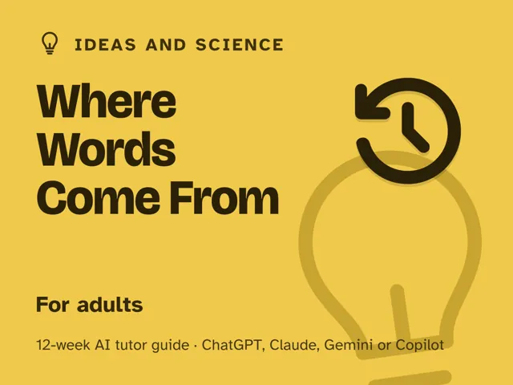

Where Words Come From
$29Instant download: a PDF to read, a browser copy, and the AI-tutor file you hand straight to any AI assistant.Buy it on Etsy →
Take the free placement check first: 15 minutes, and it names the week to start at.
A masterclass you actually finish, because instead of handing you a list of words to memorize, it teaches you the system that built them. Every English word is made of parts with a traceable history: a root, maybe a prefix or suffix, a language it passed through on its way here. Once you know that system, you stop memorizing words one at a time and start decoding them, including ones you've never seen. Each week you learn one layer of the system (Greek and Latin roots, prefixes and suffixes, how English borrowed from everywhere, how meanings drift) and practice on real words from your own life, with an AI tutor that makes you guess from the parts before it ever gives you the answer.
Format: 12 weeks, one fully scripted ~60-minute session each week that you lead: every step timed and written out for you in advance. No teaching background or prior AI experience needed. Framed like a masterclass; it's a paid pack, honestly priced.
What you get
- 12 deep weekly sessions, each built to run in one sitting: a plain-language concept, a concrete worked example, a minute-by-minute session plan with the AI-tutor prompts built in, a "show me" checkpoint, common mistakes to watch for, and practice on live words.
- A digital guide, not a printable worksheet pack: an orientation that reframes the whole thing (a word is a decodable structure, not a fact to memorize), plus a "Never used an AI chat assistant? Start here" walkthrough that takes a complete beginner from zero to ready in about five minutes, using free AI assistants (ChatGPT, Claude, Copilot, Gemini). No paid plan needed.
- Four rescue prompts in the front matter for when a word feels impossible, a session goes sideways, or the AI tutor's answer isn't landing, including a guardrail prompt that keeps the tutor guess-first instead of just handing you definitions.
- A personal word-decoder you design and build across the season and keep using for life.
- Works wherever you live. The guide is written in US English, and every launch prompt tells the AI to use your country or region (given, inferred, or asked) for spelling and examples.
The 12 weeks
- Every Word Has a History
- Greek and Latin Roots: The Core Kit
- Prefixes and Suffixes: Your Modifier Kit
- How English Borrowed From Everywhere
- Word Families and Cognates
- How Meanings Drift Over Time
- Decoding Science Jargon
- Decoding Legal and Formal Jargon
- False Friends and Traps
- Project Week I: Build Your Word-Decoder
- Project Week II: Decode a Real Text Cold
- Demo Day and the Next Ten Thousand Words
Who it's for
Adults who want a bigger vocabulary and to actually understand language, not just accumulate more words on flashcards. If you've ever frozen on a dense word in a contract, a science article, or a novel and reached straight for a dictionary, this gives you a system to try first: the roots, prefixes, and history that let you make an educated guess, and get it right most of the time. No linguistics background assumed.
Why this instead of a free chatbot
Ask a raw chatbot to "define this word" and it will, instantly, and you'll learn nothing that transfers to the next hard word you meet. This pack ships the structure and guardrails it lacks: a real 12-week progression from the highest-value roots outward, a repeatable decoding method, and a tutor set up to make you guess from the parts first and only confirm or correct after, never to just hand you the definition. You come out with a system that generates meaning on demand, not a longer list you'll forget by next month.
FAQ
- Do I need any background in Latin, Greek, or linguistics? None. Week 1 assumes zero vocabulary of its own; every root and pattern is introduced through real words you already use.
- Is this just a vocabulary list in disguise? No. A list gives you words; this gives you the decoding system that makes new words guessable; the whole point is that by week 12 you can handle a word the pack never taught you.
- Will this actually help with science or legal reading, or just everyday words? Both. Weeks 7 and 8 are built specifically around decoding scientific/medical and legal/formal jargon using the same root-and-prefix system from the rest of the course.
- Which AI does it use? I've never used an AI chat assistant. Works with any modern AI assistant (ChatGPT, Claude, Copilot, Gemini), and the free version of each is enough; no paid plan required. The guide's first section walks complete beginners through setup in about five minutes, so you're ready before Week 1 starts.
- Refunds? Standard marketplace refund policy applies.
$29Instant download: a PDF to read, a browser copy, and the AI-tutor file you hand straight to any AI assistant.Buy it on Etsy →